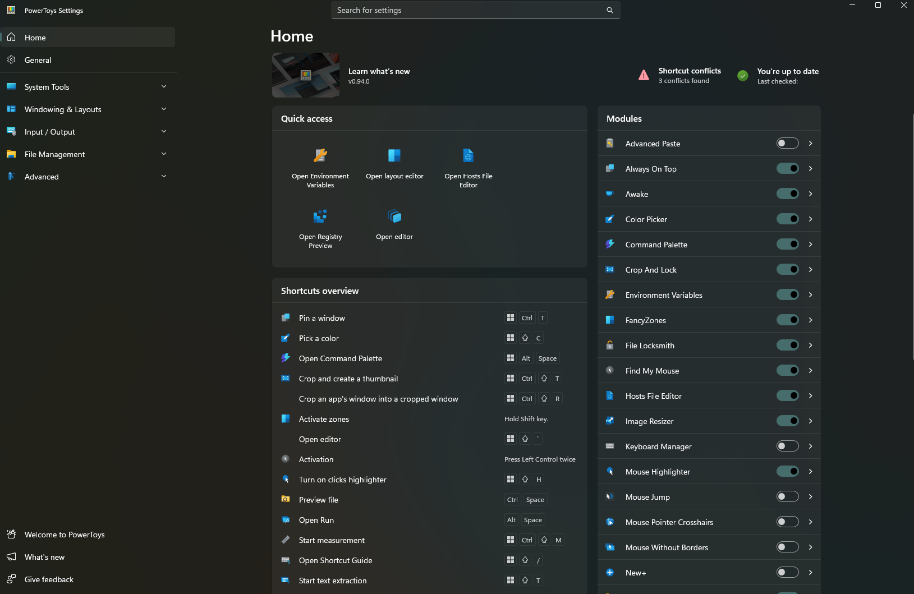
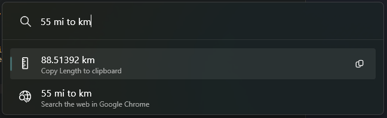
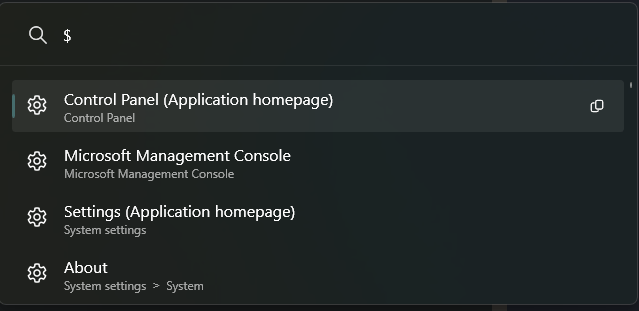
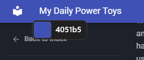
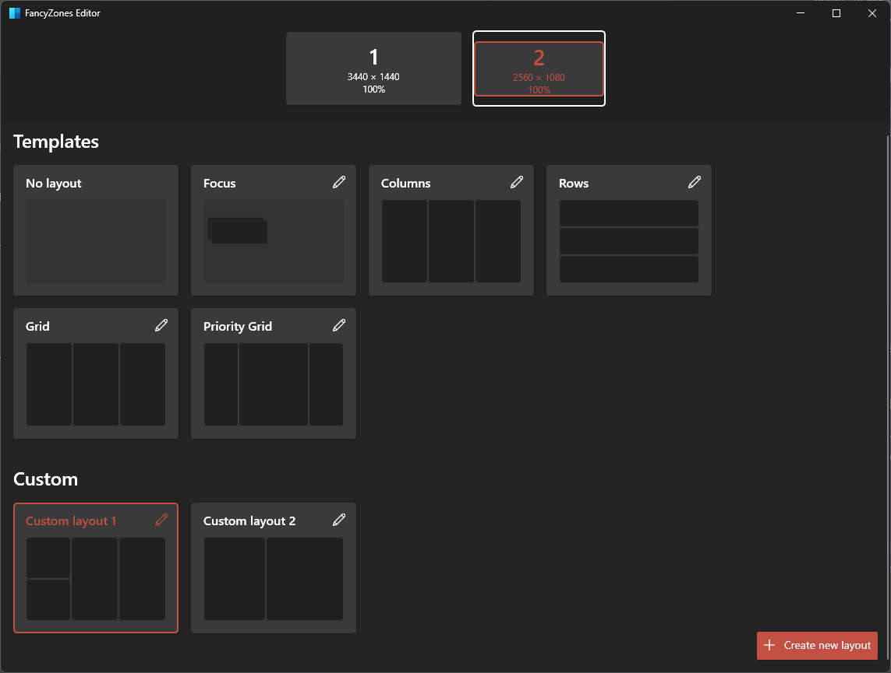

My Daily Power Toys
PowerToys is one of those tools that has become a must-have for me in my PC. It constantly makes me wonder... why is this not just built in into Windows?

Maybe because it can be a bit overwhelming at first...
For this post I'm going to talk about my favorite tools, so maybe you want to try it yourself, or you can judge my choices, whatever suits you.
Power Toys Run¶
Note
As I write this, there's already a replacement for this, called Command Palette, but I still haven't gotten used to the new one.
I have never owned a Mac, I grew up with Windows 95 at home and I have stuck to it, except for Ubuntu, which is usually what I install on my laptops when they are too old and Windows starts being annoying. However, at my previous job, I was provided with a MacBook. One of the things I enjoyed from it was the Spotlight feature (Cmd+Space). So when I saw that Power Toys had a similar tool, I gave it a try.

Definitely not as pretty as Spotlight... but still very handy.
The default shortcut is Ctrl+Space, and you can start typing immediately. I personally use it mostly as a quick calculator and sometimes as a quick search.
The way this works is by using plugins. It comes with plenty of bundled plugins, and for each of them, you can decide whether you want it to be included in global results or require an activation command. For example, the activation command for Windows Settings is $, and it is not set to Include in global results, so I need to put $ at the beginning in order to show results from this plugin.

This way you can select which plugins always show results and which one require explicit intent, so you don't end up with way too many results. For example, I have the Calculator plugin included in results, so I can just type 5+5 and get the answer. I can then press Enter to copy the result to the clipboard.
These are my main plugins
- Calculator: Sometimes I just want quick math on the spot, and being able to copy it to the clipboard is amazing.
- Unit Converter: Very similar to Calculator, but for unit conversions. Saves me the trouble of using Google. Although it is a shame that it doesn't include currency conversion.
- Windows Search: Searches files and folders. I don't use this as often, because I usually rely on Everything.
- Program: Searches programs, so you can use this as an application launcher.
Other plugins worth mentioning:
- Value Generator: I'm gonna be honest here, I didn't know this one existed, but this looks very handy if you are a developer. It can generate UUIDs, encode and decode URLs, MD5, sha256, etc.
- Windows Terminal: Shortcut to open Windows Terminal profiles.
- Window Walker: This one seems very handy, I have tried it a couple of times, but doesn't seem like my style. It lets you search among your open windows to jump to them.
You can also install third-party plugins. There are some in the GitHub Repository. I never got to try any of these, but there are some that caught my eye.
Text Extractor¶
This one is one of my favorites! Have you ever needed a long, important number from someone, and they just send you a picture of the number? On mobile this is barely a problem since you have Google Lens and whatever Apple's version of it is named. Power Toys adds this feature by using Win+Shift+T, then you will be able to select a rectangle of your screen and the detected text will be automatically copied to your clipboard.
Color Picker¶
Pressing Win+Shift+C will show an overlay on your cursor with the hex color of that pixel on your screen.

Pick your color!
After that you get a window with HEX, RGB, and HSL formats to copy, plus other shades of the same color. I use this from time to time when trying to match colors.
Always on Top¶
This one is simple, pressing Win+Ctrl+T makes the current window stay on top. Useful when you want to pin a window as reference.
Crop and Lock¶
Similar to Always on Top, but allows you to only select a portion of a window, turning that into a "monitor" of the window, so you can keep track of only certain parts of a program, for example, a loading bar.

It is one of those features that are so useful, but you never remember you have them.
Fancy Zones¶
This one is another of my daily drivers. I have two monitors, stacked vertically. The bottom one is my main screen and the top one is used for "reference", like work chat, background YouTube videos, documentation, etc. Fancy Zones lets you create layouts that you can drag windows into.

It comes with some templates and you can create your own.
Then, when you are dragging a window, you press Shift and you will see the zones you set and dropping the window in one of them will adjust the size.
File Explorer add-ons¶
These are more like "passive features", based around the preview pane and thumbnails in the file explorer. I particularly love that it renders markdown files, so you can see the README of a project fully rendered. It also renders code files, with syntax highlighting and all.
Standalone Apps¶
PowerToys also bundles a few separate apps you can open on their own. These are my favorites:
- File Locksmith: Shows which program is locking a file, so you can end it in order to modify or delete the file.
- Image Resizer: Handy tool to easily resize images.
- PowerRename: A tool to bulk rename files with RegExp patterns.
- Environment Variables: A visualizer and editor for environment variables.
- Hosts File Editor: Visual editor for the hosts file.
Conclusion¶
It might take some time getting used to some of these tools, but once you develop the muscle memory for them, they can become essential. At the end, I'm glad these tools are a separate app, because otherwise they would be stuck under the bureaucracy of Windows Update. This way, they have thousands of eyes watching and contributing.